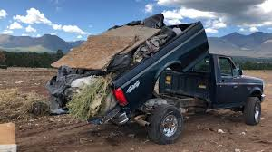
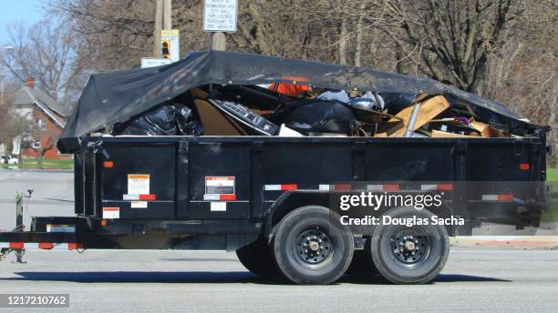

Trash removal for events and households
Trash gone after the party. Pickup support when the house is overloaded.
Neat Fleets focuses only on trash removal and haul away. We help party organizers schedule post-event cleanup pickups, we help homes clear bagged trash and overflow waste, and we also support restaurants, building centers, and other business locations that need dependable trash services.
- After-party waste pickup
- Household trash haul away
- Estimate and booking summary

For party organizers
Cleanup support after weddings, birthdays, reunions, graduations, and private events.
For households
Bagged trash, overflow bins, and everyday removal jobs that need quick pickup.
For businesses too
Restaurants, building centers, houses, and other locations can request trash or dump removal services.
About Us
We help events and homes get back to clean, fast.
Neat Fleets Trash Removal is built for one clear purpose: removing trash quickly after parties, gatherings, and heavy household waste situations. We focus on practical cleanup support, clear communication, and a booking flow that helps customers explain the job before pickup day.
Whether the waste comes from a private event, a backyard celebration, a venue cleanup, an overloaded home, a restaurant, or another business center, the goal is the same: make the pickup easy to book and easy to understand.

Our Materials
The vehicles and materials behind the pickup service.
Show customers the kind of transport and waste-handling support available for trash removal and haul away jobs.

Trash Removal Truck
Used for larger collection loads and organized pickup routes after events and at residential properties.

Pickup Dump Support
Shows a smaller dump-style hauling setup for heavier waste loads that still need flexible neighborhood access.
Bagged Trash Loads
Shows the kind of heavy bagged waste volume we can plan for after parties and household cleanup jobs.
Bins & Dumpster Handling
Shows customers we are prepared for bin-heavy jobs, overflow waste, and larger trash collection points.

Dump Trailer
Shows trailer-based hauling support for larger cleanup loads, mixed trash, and heavy bagged waste.

Pickup Truck & Trailer
Shows smaller hauling support that can help with flexible pickup routes, local jobs, and lighter transport needs.
Services
Built for cleanup after parties and pickup from homes.
The website now covers event trash after parties, household trash that needs to be taken away, and trash or dump removal for business locations such as restaurants, building centers, and other commercial properties.
After-Party Trash Pickup
Ideal for birthdays, weddings, graduations, family reunions, private venues, and community events.
Household Trash Removal
For homes with overflow trash, bagged waste, garage cleanup leftovers, and everyday haul away support.

Business Trash Services
Support for restaurants, building centers, shops, and other business locations that need trash or dump removal.
Bagged Waste & Bins
Clear bagged trash, extra bins, light event debris, and boxed waste that can be safely loaded for removal.
Scheduled Pickup Planning
Share the date, time, guest count, location, waste type, and photos so we can prepare the right pickup plan.
What We Take Away
Common items customers ask us to remove.
The service can help remove boxes, cardboard, trash bags, leftover food waste from events, after-party waste, pallets, recyclable materials, and other general non-hazardous cleanup loads.

Boxes & Cardboard
Pickup for folded boxes, shipping boxes, cardboard overflow, and packaging waste after events or deliveries.
Trash Bags
Removal of tied trash bags, bagged mixed waste, and piled cleanup bags from homes, venues, and businesses.

Leftover Food & After-Party Waste
Cleanup support for disposable plates, cups, table waste, bagged leftovers, and general trash after celebrations.

Pallets & Recyclables
Pickup for pallets, recyclable material, cardboard recycling loads, and other sorted cleanup items.
Capabilities
What customers can tell us before pickup.
Tell us the event, home, or business details
Guests, location, pickup date, pickup time, and whether the request is for a party organizer, a household, or a business site.
Show the trash type and volume
Select the waste type, describe the job, and upload photos so the pickup scope is clearer before we arrive.
Review estimate and booking summary
The site calculates a live estimate, shows a booking summary, and prepares the request for payment and scheduling.
Plan the pickup clearly
The customer can explain access conditions, waste placement, and service timing before the team arrives.
Work In Action
Show the team working hard to complete the job.
These visuals now focus on bags, bins, removal effort, and real cleanup handling without the wrong visual impression.

Heavy Bag Handling
Shows the lifting and carrying work involved when trash is collected from the site and moved out for removal.

Bin Movement
Shows hands-on movement of collection bins and the kind of practical work needed to complete pickup jobs.

On-Site Effort
Highlights active cleanup effort and the kind of labor that goes into bagging, carrying, and clearing waste.
Trash Ready For Removal
Shows the type of filled bags and mixed waste customers can photograph and submit before pickup.
Dynamic Booking
Book your pickup with event details, trash type, and photos.
Customers can enter the number of guests, the pickup location, the date, the time, the waste category, and image attachments. This works for events, homes, restaurants, building centers, and other business trash service requests. The site will generate a live estimate and booking summary before payment.
- Live estimate updates while the form changes
- Photo upload preview for planning the pickup
- Booking summary that can be reviewed before checkout
- Designed for both event trash and household pickup needs
Checkout Flow
Review the booking, then continue to payment.
The page prepares the booking summary and payment step. To process real payments in production, connect your live payment provider.
Booking Summary
No booking reviewed yet.
Contact
Talk to us about cleanup timing and pickup details.
The site now focuses only on trash removal and haul away. Customers can book online, and the contact section supports follow-up questions, scheduling, and service confirmation.
Email: hello@neatfleets-services.com
Phone: (555) 123-4567
Service focus: Party cleanup trash pickup, household haul away, and business trash services
Reservations: Booking details are entered online before payment.
Need a clear quote?
Start with the booking form Enter guests, location, pickup date, pickup time, waste type, and photos to prepare the job correctly.